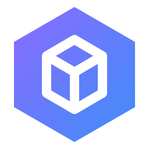
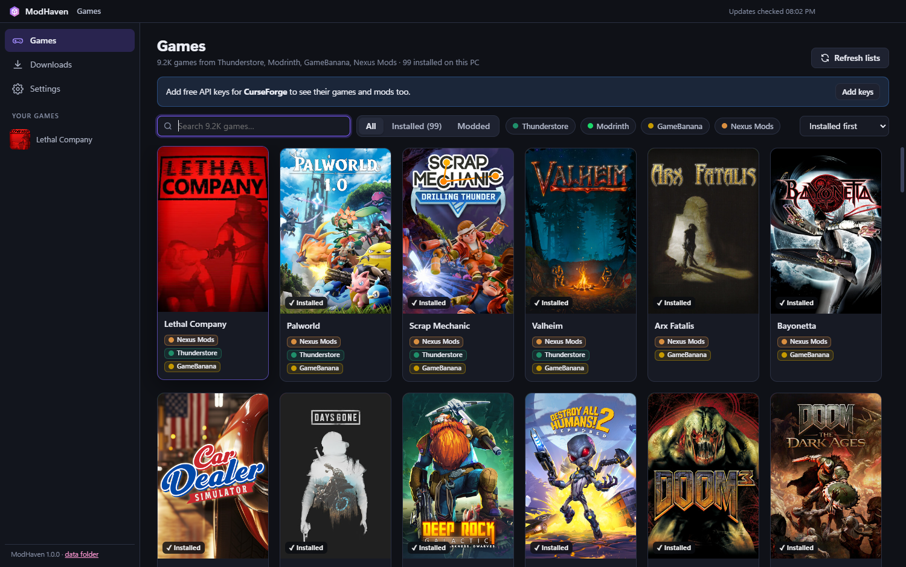
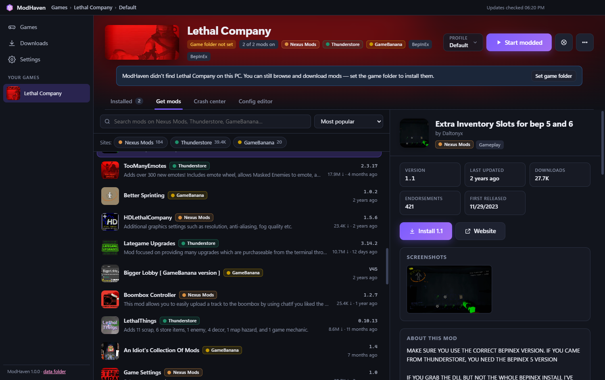
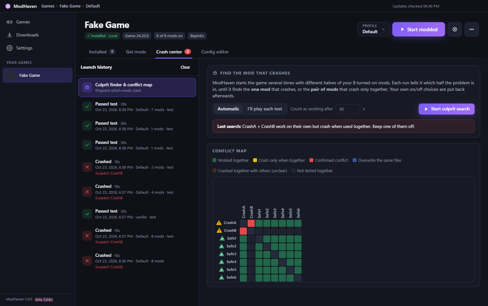

ModHaven
A free desktop mod manager for Windows. It lists, installs and updates mods from several mod sites in one place, with profiles and crash tracking. It is a personal, non-commercial hobby project.

What it does
- Browse a game's mods from Thunderstore, Modrinth, GameBanana, Nexus Mods and CurseForge in one list. Each mod shows which site it comes from, along with its description, version and last update.
- Install mods into profiles, with dependencies resolved automatically, and keep them up to date.
- Detect mods the user installed by hand and match them to their site page so they can be updated.
- Record every launch. When the game crashes, it saves the logs and narrows down which mod, or pair of mods, causes the crash.

How it uses the CurseForge API
ModHaven runs on the user's own PC and calls the CurseForge REST API directly. It sends the x-api-key header and makes only these read requests:
| Purpose | Endpoints |
|---|---|
| List supported games | GET /v1/games |
| Search and browse mods for a game | GET /v1/mods/search, GET /v1/categories |
| Mod details, description and files | GET /v1/mods/{id}, /description, /files |
| Download a file the user chose to install | GET /v1/mods/{id}/files/{fileId}/download-url |
| Recognise mods already on disk | POST /v1/fingerprints/{gameId} |
ModHaven does not save or cache CurseForge API data: lists, descriptions and pictures are requested from the API when the user views them, and a profile keeps only the mod and file ids needed to know which file is installed. Each user enters their own API key, which stays on their own PC; no key is built into ModHaven or shared. Files are downloaded only when the user installs or updates a mod. Mods whose authors have disabled third-party distribution are never downloaded; ModHaven opens their CurseForge page instead. Mod names, authors and links are shown as they appear on CurseForge, and every mod links back to its CurseForge page. Nothing is redistributed or mirrored.

Source
The source code is in this repository. ModHaven is built with Electron and runs on Windows.